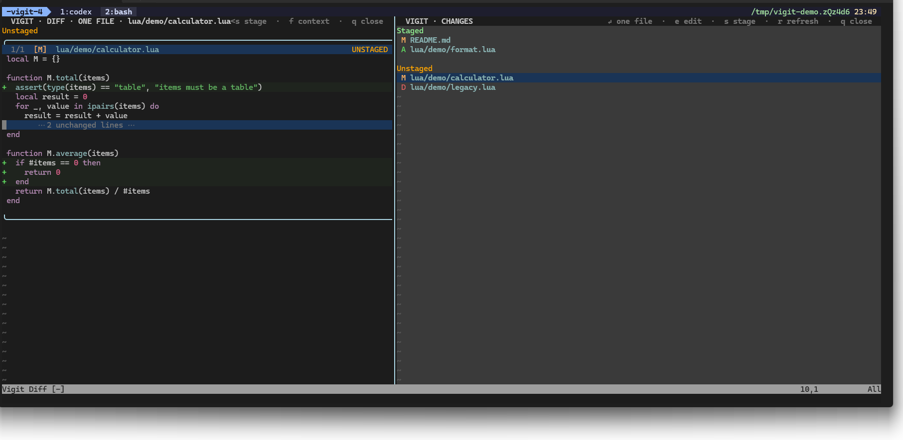
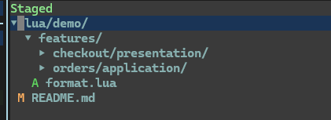

01
INDEX CONTROL
Stage with intent.
Add an unstaged file or hunk to the index — or remove a staged one — with the same mapping and immediate visual feedback.
Git changes, inside Neovim
Vigit turns staged and unstaged changes into a focused, keyboard-first workspace — review, navigate, edit, and build your index without leaving Neovim.

Built for the review loop
Every part of the interface is designed to keep the current decision visible: what changed, where it lives, and whether it belongs in the next commit.
INDEX CONTROL
Add an unstaged file or hunk to the index — or remove a staged one — with the same mapping and immediate visual feedback.
NAVIGATION
Use compact unique filenames or a collapsible tree that folds long directory chains.
FOCUS
Scroll the complete change set, then focus one file and preview the next selection as you move.
REAL BUFFERS
Open the selected path in a normal modifiable Neovim tab. Filetype, syntax, LSP, mappings, and plugins stay yours. Save, press Q, and return to a refreshed diff.
A small, complete loop
Review staged and unstaged changes as one coherent workspace.
j / kOpen the selected file and keep the changes list in reach.
EnterWork in a normal Neovim buffer with your existing setup.
eStage or unstage the current file or hunk, then keep moving.
sInterface gallery

RECORDED WALKTHROUGH
The first project card ships with real interface screenshots. A short keyboard-driven WebM/MP4 walkthrough is the next media update.
Try the complete fixture
$ ./scripts/demo.sh
Generates staged, unstaged, deleted, untracked, deeply nested, and long-file changes in a disposable repository.
Read the quick start